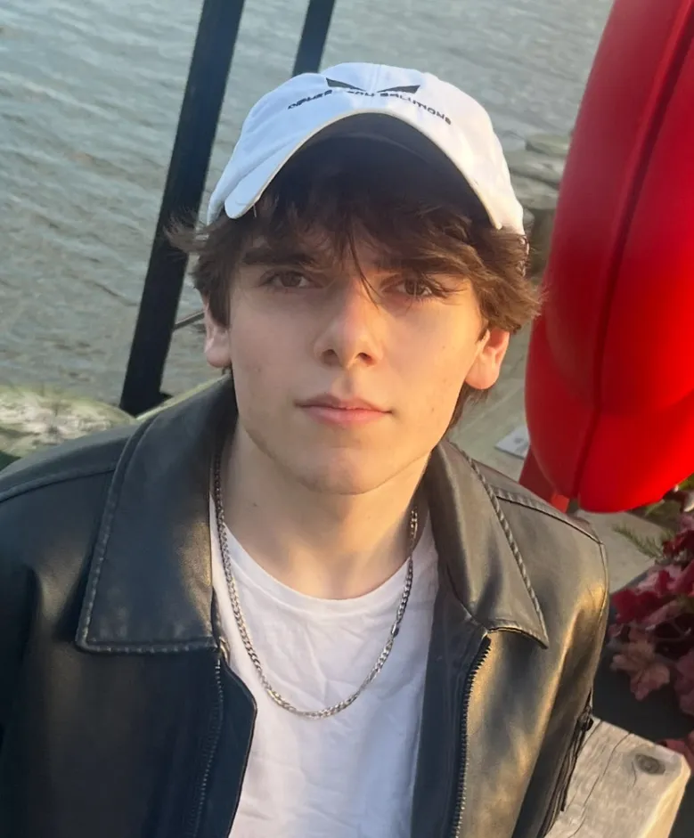

skitts [at] umd [dot] edu
Hi, I'm Spencer. I study CS and math at UMD. I'm interested in technical AI safety research and mitigating catastrophic risks from AI.
Right now, I'm doing research @ SPAR, studying LLM introspection with LawZero, and value reflection with Tim Hua.
Previously, I was an SDE intern at Amazon and did ML research with Mt. Sinai working on breast cancer detection in mammograms.
I'm also interested in climbing, brazilian jiu-jitsu, Ichiko Aoba, caving, and mountaineering.
I'm always happy to talk -- feel free to reach out!
